1. Estructura Oficial del Segundo Parcial 2025 (10 Puntos)
Hoja de Ruta OficialEl Segundo Parcial evalúa de forma teórico-práctica las Unidades 6, 7 y 8 (la Unidad 5: Agua y Biomoléculas se acredita con la Actividad Semanal 6; solo quienes no la hayan aprobado rinden un ejercicio adicional sobre puentes de hidrógeno, propiedades térmicas del agua y biomoléculas):
Electricidad y Bioelectricidad
- • 1a (1 punto): Problema numérico de Efecto Joule o cálculo de variables con la Ley de Ohm y Potencia eléctrica.
- • 1b (1 punto): Problema conceptual/aplicado sobre transmisión del impulso nervioso (conducción continua vs. saltatoria en mielina), potenciales de membrana o conducción cardíaca.
Soluciones, Concentración y pH
- • 2a (2 puntos): Problema de concentración porcentual (% P/P, % P/V, % V/V y conversión con densidad).
- • 2b (2 puntos): Problema de concentración molar (Molaridad M) y Masa Molar.
- • 2c (2 puntos): Problema de aplicación de ácidos y bases, escala de pH / pOH, buffers fisiológicos o tonicidad/ósmosis.
Hidrostática e Hidrodinámica
- • 3a (1 punto): Problema numérico con Ecuación de Continuidad o de Presión Hidrostática.
- • 3b (1 punto): Problema de Edema (Fuerzas de Starling), leyes de hidrodinámica en la circulación (ateroma/trombosis, complianza/elastanza) o Número de Reynolds.
2. Modelo de 2º Parcial Oficial — Los 8 Ejercicios Resueltos Paso a Paso
Resolución Completa"Una persona camina descalza sobre un piso de madera húmedo y toca accidentalmente un cable de 220 V. Si la resistencia equivalente del cuerpo es de 2.000.000 mΩ, ¿cuál es la intensidad de corriente?"
"Un equipo desfibrilador genera 300 J. Si la resistencia fue de 1200 Ω y la corriente circulante fue de 19.000 mA, ¿qué tiempo duró la aplicación de la descarga?"
"Explique cuál es la relación de la presión atmosférica con altura, temperatura y humedad. Explique si aumenta o disminuye."
"¿A qué altura respecto al brazo debe colocarse una bolsa de suero (δ = 1,5 kg/L) para que el líquido entre a la vena (10 mmHg)?"
Hoja de Fórmulas Maestra (Unidades 6, 7 y 8 + Equivalencias)
• 1 Ω = 1000 mΩ
• 1 kW = 1000 W
• 1 W = 1 J / 1 s
• 1 L = 1000 ml = 1000 cm3
• 1 ml = 1 cm3
• 1 m3 = 1000 L = 106 cm3
• 1 atm = 101.325 Pa
• 1 bar = 100.000 Pa
• 1 g/ml = 1 kg/L = 1000 kg/m3
• 1 m2 = 10.000 cm2 (104 cm2)
• 1 min = 60 s
• 1 hora = 60 min = 3600 s
Unidad 6: Electricidad, Circuitos y Bioelectricidad Humana
En Ciencias de la Salud estudiamos la electricidad con un doble propósito: comprender cómo funcionan los equipos biomédicos (desfibriladores, electrocardiógrafos, lámparas infrarrojas) y cómo prevenir accidentes por electrocución, pero sobre todo entender cómo nuestro propio cuerpo genera y conduce señales bioeléctricas en las neuronas, los músculos y el corazón.
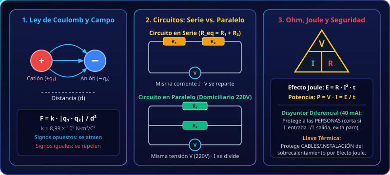
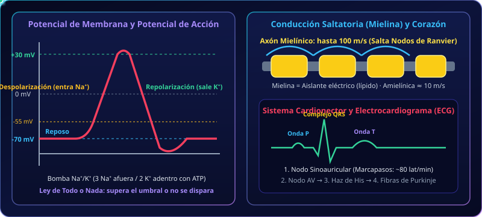
6.1. Estructura Atómica, Carga Eléctrica, Conductores y Aislantes
Toda la materia está constituida por átomos. En el centro del átomo se ubica el núcleo, formado por protones (con carga eléctrica positiva) y neutrones (eléctricamente neutros), los cuales concentran casi toda la masa atómica y están fuertemente unidos por fuerzas nucleares. Alrededor del núcleo se desplazan los electrones (con carga eléctrica negativa), que son partículas muchísimo más livianas y fáciles de arrancar o transferir de un átomo a otro.
- • Valor de la carga elemental (q): Tanto un protón como un electrón poseen exactamente la misma magnitud de carga: 1,6 × 10−19 Coulombs (C) (positiva en el protón, negativa en el electrón). Un Coulomb equivale a la carga conjunta de unos 6,24 × 1018 electrones.
- • Átomos neutros, Cationes y Aniones: En estado fundamental, un átomo tiene igual número de protones que de electrones (carga neta = 0). Si un átomo pierde electrones, quedan más protones que electrones y se convierte en un ión positivo o catión (+) (ej. Na+, K+, Ca2+). Si gana electrones, queda con exceso de cargas negativas y se convierte en un ión negativo o anión (−) (ej. Cl−, HCO3−).
- • Conductores vs. Aislantes (Dieléctricos), Semiconductores y Superconductores:
— Los conductores permiten que las cargas se muevan libremente por su interior. Se dividen en conductores de 1ª especie (metales como cobre, plata, oro y aluminio, donde se mueven electrones libres sin transporte de masa) y conductores de 2ª especie o electrolíticos (soluciones acuosas con sales, ácidos o bases disociadas en iones, como el plasma sanguíneo, la linfa, la orina, el sudor y el líquido intracelular/intersticial).
— Los aislantes o dieléctricos (plástico, goma, caucho, vidrio, madera seca, porcelana y en biología los lípidos de la membrana celular y la vaina de mielina) tienen sus electrones fuertemente ligados a los núcleos e impiden el paso de la corriente.
— Los semiconductores (silicio, germanio) conducen solo bajo condiciones específicas y forman los transistores de la aparatología médica. Los superconductores pierden toda resistencia eléctrica al enfriarse por debajo de su temperatura crítica (usados en resonadores magnéticos nucleares).
6.2. Electrostática: Ley de Coulomb, Electrización, Puesta a Tierra y Campo Eléctrico
La electrostática estudia las cargas eléctricas en reposo y las fuerzas de atracción o repulsión entre ellas. La regla fundamental indica que cargas de igual signo se repelen y cargas de distinto signo se atraen. Charles-Augustin de Coulomb demostró experimentalmente que la intensidad de esa fuerza (F) obedece a la ecuación:
- • Interpretación física de la Ley de Coulomb: La fuerza es directamente proporcional al producto de las cargas (q1 · q2) e inversamente proporcional al cuadrado de la distancia (d2) que las separa. Esto significa que si duplicamos la distancia entre dos cargas, la fuerza no cae a la mitad, sino a la cuarta parte.
- • Formas de electrizar un cuerpo:
1. Por frotamiento (fricción): al frotar dos materiales distintos, uno arranca electrones del otro y quedan con cargas de signo opuesto.
2. Por contacto: al tocar un cuerpo neutro con otro cargado, parte de la carga pasa al neutro y ambos quedan con el mismo signo.
3. Por inducción: al acercar un cuerpo cargado sin tocar al objeto neutro, las cargas del objeto se redistribuyen (las de signo opuesto se acercan y las de igual signo se alejan). - • Conexión a Tierra y Campo Eléctrico: Conectar un artefacto a tierra mediante una jabalina conductora permite que cualquier acumulación peligrosa de cargas se descargue hacia el planeta Tierra, protegiendo al usuario. Alrededor de toda carga existe un campo eléctrico cuyas líneas de fuerza salen de las cargas positivas (+) y entran en las negativas (−); donde las líneas están más juntas, el campo es más intenso.
6.3. Corriente Eléctrica, Ley de Ohm, Circuitos, Efecto Joule y Seguridad
Para que exista una corriente eléctrica (I) (movimiento continuo de cargas) necesitamos que una fuente (pila, batería o generador) mantenga una diferencia de potencial, voltaje o tensión (V) entre los extremos de un conductor cerrado. La relación entre tensión, corriente y la oposición del material (resistencia R) está dada por la Ley de Ohm:
- • Circuitos en Serie vs. en Paralelo: En un circuito en serie los receptores están en fila sobre el mismo cable (Req = R1 + R2), reciben la misma corriente I, se reparten el voltaje y si uno se desconecta se apagan todos. En un circuito en paralelo (como toda la instalación eléctrica domiciliaria y hospitalaria de 220 V), cada aparato tiene su propia rama conectada a los 220 V; todos reciben la misma tensión de 220 V y funcionan de manera independiente.
- • Efecto Joule y Seguridad Eléctrica (Llave Térmica vs. Disyuntor Diferencial): El roce de los electrones contra los átomos del conductor transforma energía eléctrica en calor (E = R · I2 · t). La llave térmica protege los cables cuando la corriente total sube demasiado para evitar que se derrita el aislante y se produzca un incendio. En cambio, el disyuntor diferencial (sensibilidad de 40 mA) protege a las personas: detecta si parte de la corriente se fuga a tierra a través del cuerpo de alguien y corta el suministro antes de que la corriente produzca parálisis respiratoria o fibrilación cardíaca irreversible (> 46–75 mA en corriente alterna de 50 Hz).
6.4. Bioelectricidad: Potencial de Membrana, Impulso Nervioso y Corazón
Todas las células vivas mantienen una diferencia de potencial eléctrico a través de su membrana plasmática, pero las neuronas y las células musculares (esqueléticas y cardíacas) son tejidos excitables capaces de invertir rápidamente ese potencial para transmitir información:
- • Potencial de Reposo (−70 mV) y Bomba Na+/K+: En reposo, el citoplasma neuronal es negativo (−70 mV) respecto al líquido extracelular. Afuera abundan el Na+ y el Cl−; adentro abundan el K+ y las proteínas con carga negativa. La bomba Na+/K+ ATPasa gasta energía (ATP) para bombear 3 Na+ hacia afuera y 2 K+ hacia adentro en contra de sus gradientes.
- • Potencial de Acción (+30 mV) y Ley de Todo o Nada: Cuando un estímulo despolariza la membrana hasta alcanzar el potencial umbral (≈ −55 mV), se abren masivamente los canales de Na+ regulados por voltaje: el Na+ entra de golpe a la célula llevando el voltaje hasta +30 mV (Despolarización). Inmediatamente después, los canales de Na+ se cierran y se abren los de K+: el K+ sale de la célula devolviendo el potencial a valores negativos (Repolarización). Si el estímulo no llega al umbral, no se dispara; si lo supera, se dispara siempre con idéntica intensidad (Principio de Todo o Nada).
- • Conducción Continua (10 m/s) vs. Conducción Saltatoria en Mielina (100 m/s): En los axones sin mielina (amielínicos), el potencial de acción debe recorrer de forma continua cada micrómetro de membrana (~10 m/s). En los axones recubiertos por vaina de mielina (un lípido aislante eléctrico), la corriente iónica solo puede atravesar la membrana en los espacios libres llamados Nodos de Ranvier; así el impulso salta de nodo en nodo a velocidades de hasta 100 m/s con mínimo gasto energético.
- • Sistema Cardionector y ECG: El latido cardíaco es iniciado eléctricamente por el Nodo Sinoauricular (SA, marcapasos natural a ~80 pulsaciones/min) → Nodo Auriculoventricular (AV) → Haz de His → Fibras de Purkinje. El electrocardiograma (ECG) registra desde la piel la onda P (despolarización auricular), el complejo QRS (despolarización ventricular) y la onda T (repolarización ventricular).
Tabla Oficial: Efectos Fisiológicos de la Corriente en el Cuerpo Humano (1 A = 1000 mA)
| Efectos Fisiológicos | Intensidad Continua (mA) | Intensidad Alterna 50 Hz (mA) | Referencia Clínica y Seguridad |
|---|---|---|---|
| No se observan sensaciones ni efectos | 0 a 3,5 mA | 0 a 0,5 mA | Ej. tocar bornes de batería de auto (2 mA en CC) |
| Choque violento sin pérdida del control muscular | 3,6 a 41 mA | 0,6 a 6 mA | Umbral de dolor; la persona aún puede soltarse |
| Nivel de agarrotamiento muscular (tetanización) | 42 a 51 mA | 7 a 10 mA | Contracción sostenida; impide abrir la mano |
| Fuerte dificultad respiratoria | 52 a 60 mA | 11 a 15 mA | Afectación muscular torácica |
| Nivel de parálisis respiratoria | — | 16 a 45 mA | ⚡ A los 40 mA abre el circuito el Disyuntor Diferencial |
| Nivel de fibrilación cardíaca irreversible | — | 46 a 75 mA | Desorganización del ritmo eléctrico ventricular |
| Paro cardíaco | — | > 75 mA | Ej. tocar enchufe de 220 V sin disyuntor (~120 mA) |
🎬 Videoteca de la Unidad 6 (Ver directo desde la web sin salir a YouTube)
Podés reproducir la lista completa en el reproductor superior o hacer clic en "▶ Ver video aquí" en cualquiera de las 8 tarjetas para verlo en máxima calidad ahí mismo.
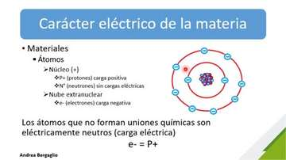
Electricidad 1: Estructura Atómica y Materiales
Átomo, carga elemental del electrón y protón, iones (cationes y aniones) y clasificación eléctrica de materiales.
— Conductores: Tienen electrones libres (en metales como cobre, plata, oro y aluminio) o iones libres en solución (electrolitos en sangre, plasma y tejidos húmedos) que permiten el paso fluido de la corriente.
— Aislantes o Dieléctricos: Sus electrones están fuertemente retenidos en los enlaces químicos y no pueden desplazarse (plástico, goma, madera seca, vidrio, porcelana, aire seco y la vaina de mielina de los axones neuronales).
— Semiconductores: Como el silicio y el germanio, conducen solo bajo ciertas condiciones de voltaje o temperatura (base de los microchips y equipos médicos).
— Superconductores: Aleaciones enfriadas a temperaturas cercanas al cero absoluto que conducen la electricidad con resistencia exactamente igual a cero, sin pérdida de calor.
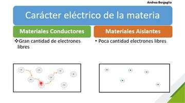
Electricidad 2: Interacción de Cargas y Ley de Coulomb
Fuerzas electrostáticas de atracción y repulsión, Ley de Coulomb y dependencia cuadrática inversa con la distancia.
— La fuerza electrostática (F, medida en Newtons) es directamente proporcional al producto de las magnitudes de las cargas (q1 y q2, en Coulombs): si una carga se duplica, la fuerza se duplica.
— Es inversamente proporcional al cuadrado de la distancia (d2) que las separa (en metros): si las cargas se alejan al doble de distancia (2d), la fuerza disminuye a la cuarta parte (14); si se acercan a la mitad de distancia, la fuerza se multiplica por 4.
— La constante electrostática en el vacío o aire vale k = 8,99 × 109 N·m2/C2.
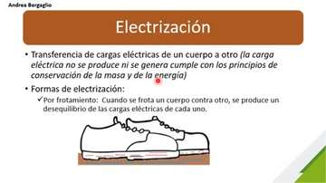
Electricidad 3: Electrización, Tierra y Campo Eléctrico
Electrización por frotamiento, contacto e inducción; descarga a tierra, pararrayos y líneas de campo eléctrico.
1. Por Frotamiento (Fricción): Al frotar dos cuerpos inicialmente neutros (ej. vidrio con seda o peine plástico con el pelo), uno cede electrones al otro; ambos quedan cargados con igual magnitud pero signos opuestos.
2. Por Contacto: Cuando un cuerpo ya cargado toca físicamente a otro neutro, pasan electrones entre ambos y el segundo cuerpo adquiere carga del mismo signo que el primero.
3. Por Inducción (sin contacto): Al acercar un cuerpo cargado (inductor) a un conductor neutro sin tocarlo, atrae hacia el extremo cercano las cargas de signo opuesto y repele hacia el extremo lejano las del mismo signo, creando una polarización inducida.
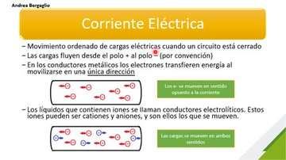
Corriente Eléctrica: Conductores de 1ª y 2ª Especie, CC y CA
Definición de intensidad de corriente en Amperes, conductores metálicos vs. electrolíticos y corriente continua vs. alterna.
— Primera especie (metálicos): Conducen mediante el desplazamiento de electrones libres sin transporte de masa química (cables de cobre).
— Segunda especie (electrolíticos): Conducen mediante el desplazamiento simultáneo de cationes (+) y aniones (−) disueltos en agua. ¡El cuerpo humano (sangre, linfa, citoplasma y líquido intersticial) es un conductor electrolítico de segunda especie!
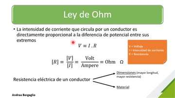
Ley de Ohm, Resistencia y Conductancia Eléctrica
Diferencia de potencial (tensión), resistencia eléctrica, factores geométricos y relación V = I · R.
1. Tensión, Voltaje o Diferencia de Potencial (V, en Volts): Es la "fuerza impulsora" o trabajo por unidad de carga que empuja a los electrones desde un punto de mayor potencial a otro de menor potencial.
2. Intensidad de Corriente (I, en Amperes): El caudal de carga que efectivamente circula.
3. Resistencia Eléctrica (R, en Ohmios Ω): El freno u oposición que ofrece la estructura atómica del material al avance de las cargas (1 Ω = 1000 mΩ).
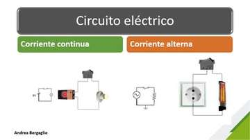
Circuitos Eléctricos 1: Serie, Paralelo y Potencia
Diferencias entre conexión en serie y en paralelo (domiciliaria), potencia en Watts y energía en kWh.
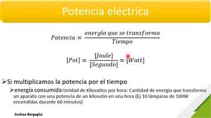
Circuitos Eléctricos 2: Efecto Joule, Electrocución y Disyuntor
Calor disipado por Efecto Joule, tabla de efectos fisiológicos (mA), llave térmica vs. disyuntor diferencial (40 mA).
— Llave Térmica (Termomagnética): Detecta exceso de corriente por sobrecarga o cortocircuito para proteger los cables y evitar incendios por Efecto Joule; no salva a una persona de electrocutarse.
— Disyuntor Diferencial (sensibilidad de 40 mA): Compara la corriente que entra por el vivo con la que vuelve por el neutro. Si una persona toca un cable y deriva más de 40 mA a tierra a través de su cuerpo, el disyuntor detecta esa diferencia y corta la electricidad en milisegundos, evitando que se alcance la fibrilación ventricular y el paro cardíaco (> 75 mA en CA).
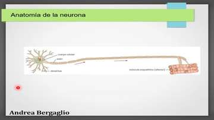
Bioelectricidad: Impulso Nervioso, Mielina y Corazón
Potencial de reposo (-70 mV), potencial de acción (+30 mV), bomba Na+/K+, conducción saltatoria y sistema cardionector.
1. Estímulo y Umbral (≈ −55 mV): Si el estímulo no alcanza el umbral, no hay potencial de acción; si lo alcanza o supera, se dispara siempre con la misma amplitud máxima (Ley de Todo o Nada).
2. Despolarización (+30 mV): Se abren los canales de Na+ dependientes de voltaje; el Na+ ingresa masivamente a la célula invirtiendo la polaridad hasta +30 mV.
3. Repolarización: Se inactivan los canales de Na+ y se abren los canales de K+; el K+ sale de la célula restaurando el potencial negativo de reposo.
Unidad 7: Soluciones, Concentraciones, Ácidos/Bases, pH, Buffers y Ósmosis
La Unidad 7 representa el 60% de la nota del Segundo Parcial (6 puntos sobre 10). Todas las reacciones bioquímicas y el transporte de nutrientes, fármacos y electrolitos ocurren en soluciones acuosas cuyo pH y presión osmótica deben mantenerse dentro de límites estrechos para conservar la vida.
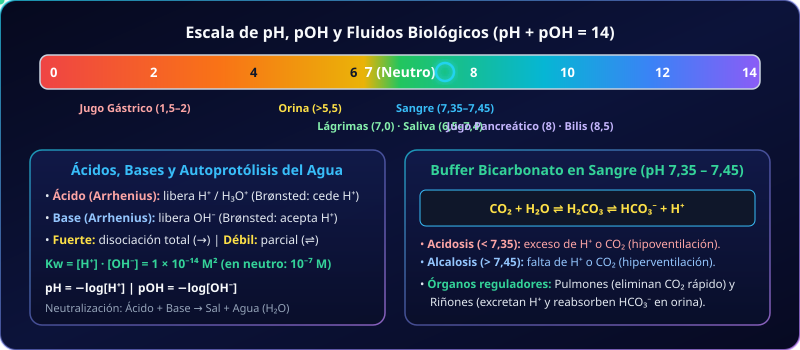
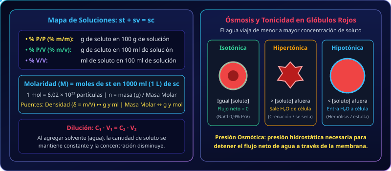
7.1. Teoría de Soluciones, Solubilidad, Unidades Porcentuales y Densidad
Una solución o disolución (sc) es una mezcla homogénea (una sola fase con idénticas propiedades intensivas en todos sus puntos) formada por un soluto (st) que se disuelve en un solvente (sv). En sistemas biológicos y farmacológicos el solvente universal es el agua, cuya estructura polar le permite rodear y solvatizar tanto moléculas polares (como la glucosa) como compuestos iónicos (como el NaCl).
- • Solubilidad y Saturación: Se llama solubilidad a la máxima cantidad de soluto que puede disolverse en 100 ml (o 100 g) de solvente a una temperatura determinada. Cuando una solución alcanza ese límite se denomina solución saturada; si agregamos más soluto, el excedente no se disuelve y cae al fondo formando un precipitado (pasando a ser un sistema heterogéneo). En los sólidos disueltos en líquidos, al aumentar la temperatura aumenta la solubilidad.
- • Cómo plantear siempre los problemas de concentración porcentual: Toda unidad porcentual expresa cuánto soluto hay por cada 100 partes de solución:
— % P/P (% m/m): gramos de soluto cada 100 g de solución.
— % P/V (% m/v): gramos de soluto cada 100 ml de solución.
— % V/V: mililitros de soluto cada 100 ml de solución.
— El rol puente de la Densidad (δ): Si tenés el volumen de la solución en ml y te piden % P/P (que requiere gramos de solución), usás la densidad de la solución (msc = δsc · Vsc) para transformar los mililitros de solución en gramos de solución antes de armar la regla de tres.
7.2. El Mol, Masa Molar, Molaridad (M), Dilución y Dosificación
Mientras que las unidades físicas miden gramos o mililitros, las unidades químicas como la Molaridad (M) miden la cantidad de partículas reales (moles) disueltas por cada litro (1000 ml) de solución:
- • ¿Cómo pasar de % P/V a Molaridad en 2 pasos?
1. Multiplicás por 10 los gramos de soluto que están en 100 ml para saber cuántos gramos de soluto hay en 1000 ml (1 litro) de solución (ej. en glucosa 17% m/v hay 17 g en 100 ml ⇒ hay 170 g en 1000 ml).
2. Dividís esos gramos por la Masa Molar (g/mol) del compuesto para transformarlos en moles (ej. 170 g ÷ 180 g/mol = 0,944 M). - • Proceso de Dilución (C1 · V1 = C2 · V2): Diluir una solución consiste en agregarle más solvente (agua). Al agregar agua, el volumen total aumenta (V2 > V1) y la concentración disminuye (C2 < C1), pero la cantidad absoluta de soluto disuelto permanece constante.
7.3. Electrolitos, Ácidos y Bases, Escala de pH/pOH y Buffers Fisiológicos
El agua pura experimenta una levísima autoionización o autoprotólisis reversible en la que una molécula de agua cede un protón a otra: H2O + H2O ⇌ H3O+ + OH−. A 25 °C el producto de ambas concentraciones molares es constante e igual a Kw = 10−14:
- • Relación inversa entre [H+] y pH: Como el pH tiene un signo menos delante del logaritmo, cuanto mayor es la concentración de protones [H+], menor es el valor numérico del pH (más ácida es la solución). Por ejemplo, [H+] = 10−2 M (pH 2) tiene diez mil veces más protones que [H+] = 10−6 M (pH 6).
- • Importancia vital de los Buffers y del pH sanguíneo (7,35 a 7,45): Todas las proteínas y enzimas humanas tienen una estructura tridimensional que depende del pH. Si el pH de la sangre arterial cae por debajo de 7,35 se produce acidosis (depresión del sistema nervioso central, coma); si sube por encima de 7,45 se produce alcalosis (hiperexcitabilidad neuromuscular, tetania). El Buffer Bicarbonato (H2CO3 / HCO3−), asistido por los pulmones (que regulan el CO2) y los riñones (que regulan el H+ y el HCO3−), neutraliza de inmediato los ácidos metabólicos manteniendo la homeostasis.
- • Ósmosis y Tonicidad en las Células: La membrana celular actúa como una membrana semipermeable. Si colocamos glóbulos rojos en una solución isotónica (NaCl 0,9% P/V o glucosa 5% P/V), la presión osmótica externa iguala a la interna y la célula conserva su volumen normal. En una solución hipertónica (> 0,9% NaCl), el agua sale de la célula hacia el medio externo más concentrado y el eritrocito sufre crenación (se arruga y deshidrata). En una solución hipotónica (< 0,9% NaCl o agua pura), el agua ingresa masivamente a la célula provocando su hinchazón y estallido (hemólisis).
🎬 Videoteca de la Unidad 7 (6 Videos de la Playlist + 4 Clases Teórico-Prácticas)
Reproducí los videos directamente desde aquí sin salir de la plataforma y desplegá debajo de cada tarjeta su explicación paso a paso.
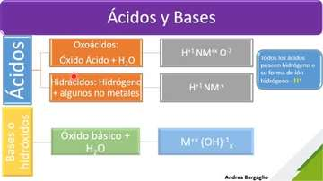
Ácidos y Bases 1: Electrolitos, Arrhenius y Brønsted-Lowry
Definición de ácidos (hidrácidos y oxoácidos), bases (hidróxidos) y pares conjugados ácido-base.
— Ácido: Sustancia eléctricamente neutra que en solución acuosa se disocia liberando iones hidrógeno o protones (H+), los cuales se unen al agua formando el ion hidronio (H3O+). Incluye hidrácidos (sin oxígeno, ej. ácido clorhídrico HCl) y oxoácidos (con oxígeno, ej. ácido sulfúrico H2SO4, ácido nítrico HNO3, ácido carbónico H2CO3).
— Base: Sustancia que en solución acuosa se disocia liberando iones hidroxilo u oxhidrilo (OH−), típicamente hidróxidos metálicos (NaOH, KOH, Ca(OH)2, Mg(OH)2).
— Ácido: Toda especie química capaz de ceder un protón (H+) a otra sustancia. Al perder el protón se convierte en su base conjugada.
— Base: Toda especie química capaz de aceptar un protón (H+). Al ganar el protón se convierte en su ácido conjugado. Esta teoría permite explicar por qué el amoníaco (NH3) es una base aunque no tenga grupos OH− en su fórmula: NH3 + H2O ⇌ NH4+ + OH−.
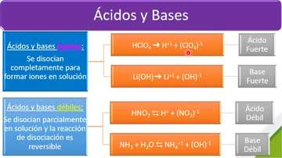
Ácidos y Bases 2: Fuerza, Neutralización y Escala de pH
Ácidos fuertes vs. débiles, reacción de neutralización, producto iónico del agua (Kw) y pH de fluidos biológicos.
— Un ácido o base fuerte (ej. HCl, HNO3, NaOH, KOH) se disocia al 100% de manera irreversible (se escribe con una sola flecha →); en el agua ya no quedan moléculas sin disociar.
— Un ácido o base débil (ej. ácido acético CH3COOH, ácido carbónico H2CO3, amoníaco NH3) se disocia parcialmente de manera reversible (doble flecha ⇌), coexistiendo en equilibrio las moléculas sin disociar con los iones.
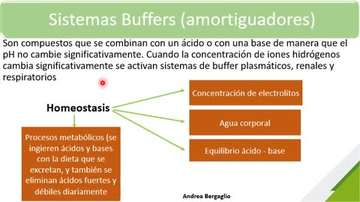
Regulación Ácido-Base: Buffers Fisiológicos
Mecanismo de acción de los amortiguadores, sistema bicarbonato/ácido carbónico y compensación pulmonar y renal.
— Compensación Respiratoria (rápida, en minutos): Ante una acidosis (exceso de H+), el equilibrio se desplaza hacia la izquierda formando más CO2 y el bulbo raquídeo estimula la hiperventilación pulmonar para exhalar CO2. Ante una alcalosis, disminuye la frecuencia respiratoria (hipoventilación) para retener CO2.
— Compensación Renal (lenta y definitiva, horas a días): Los riñones regulan la excreción de H+ en la orina y la reabsorción o síntesis de iones bicarbonato (HCO3−).
— Otros sistemas buffer del organismo: Buffer fosfato (intracelular y tubular renal), buffer hemoglobina (en glóbulos rojos) y buffer de proteínas plasmáticas e intracelulares.
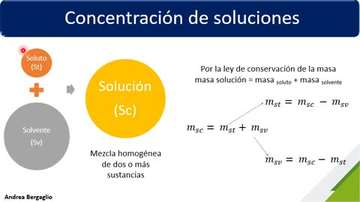
Concentración de Soluciones: Unidades Físicas Porcentuales
Soluto + solvente = solución, conservación de la masa, %P/P, %P/V, %V/V y conversión con densidad.
1. % P/P (o % m/m): gramos de soluto en 100 gramos de solución.
2. % P/V (o % m/v): gramos de soluto en 100 mililitros (o cm3) de solución.
3. % V/V: mililitros de soluto en 100 mililitros de solución.
4. mg%: miligramos de soluto en 100 mililitros de solución (muy usado en análisis clínicos como glucemia: 70–110 mg%).
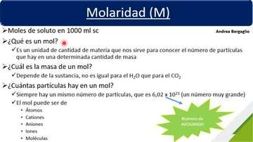
Molaridad: Mol, Número de Avogadro y Masa Molar
Unidades químicas de concentración, cálculo de masa molar con la tabla periódica y definición de Molaridad (M).
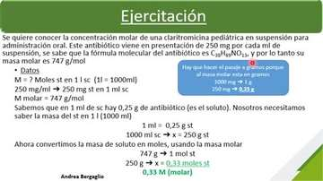
Ejemplos Resueltos de Soluciones (3 Problemas de Examen)
Resolución paso a paso de Claritromicina pediátrica (250 mg/ml a M), Antibiótico (500 mg/5 ml a %P/V) y HCl 0,8 M a %P/V.
1) Pasamos 250 mg a gramos: 250 ÷ 1000 = 0,25 g de soluto en 1 ml de solución.
2) Llevamos a 1000 ml (1 L) de solución: 0,25 g/ml × 1000 ml = 250 g de soluto.
3) Convertimos los 250 g a moles dividiendo por la masa molar (747 g/mol): M = 250 g747 g/mol = 0,33 M.
1) Pasamos 500 mg a gramos: 0,5 g de soluto en 5 ml de solución.
2) Llevamos a 100 ml de solución por regla de tres: 100 ml × 0,5 g5 ml = 10 g de soluto en 100 ml ⇒ 10 % P/V.
1) Calculamos la masa molar del HCl con la tabla periódica: H (1) + Cl (35) = 36 g/mol.
2) Pasamos los 0,8 moles (que están en 1000 ml) a gramos: 0,8 mol × 36 g/mol = 28,8 g de HCl en 1000 ml.
3) Llevamos a 100 ml de solución dividiendo por 10: 28,8 g10 = 2,88 % m/v.
Teórica 1: Electrolitos, Escala de pH/pOH y Buffers
Clase completa del Prof. Álvaro Sánchez Jovic sobre disociación iónica, ácidos/bases fuertes y débiles, Kw, pH y buffer bicarbonato.
Teórica 2: Soluciones, Conversión con Densidad, Dilución y Ósmosis
Clase completa sobre solubilidad, saturación, %P/P, %P/V, %V/V, Molaridad, fórmula de dilución y presión osmótica.
Práctica 2: Resolución de Ejercicios 7, 8, 9 y 10a
Resolución en pizarra de los ejercicios 7 (volumen de agua con densidad de soluto), 8 (frasco de droga), 9 (amoxicilina) y 10a (nistatina).
Práctica 3: Resolución de Ejercicios 10b, 11 y 12 (Molaridad)
Resolución en pizarra de Nistatina a Molaridad (10b), Glucosa 2% y NaCl 0,9% a Molaridad (11) y Claritromicina completa (12).
Unidad 8: Hidrostática, Hemodinamia, Sistema Linfático y Fisiología del Edema
En la Unidad 8 aplicamos las leyes de la mecánica de los fluidos (Hidrostática e Hidrodinámica) para comprender cómo bombea el corazón, cómo varía la presión arterial y venosa, por qué se produce una trombosis ante una placa de ateroma y cómo las Fuerzas de Starling y el sistema linfático regulan el líquido intersticial evitando el edema.
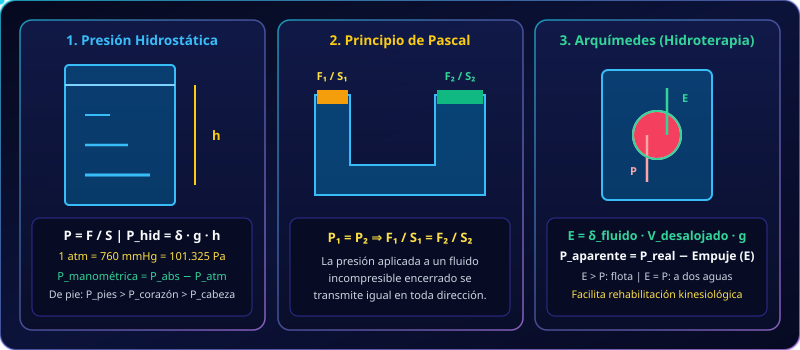
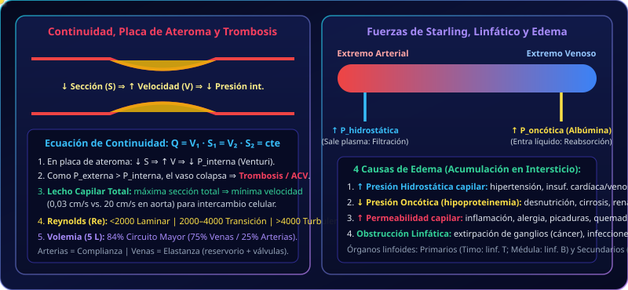
8.1. Hidrostática: Presión, Columna Líquida, Pascal, Arquímedes y Presión Sanguínea
Un fluido es toda sustancia (líquida o gaseosa) que se deforma continuamente al aplicarle una fuerza tangencial y adopta la forma de su recipiente. Los líquidos son prácticamente incompresibles, por lo que su densidad (δ) permanece constante con la presión. Cuando un líquido está en reposo, ejerce sobre las paredes y sobre cualquier cuerpo sumergido una presión hidrostática debida al peso de la columna líquida superior:
- • Principio de Pascal y Principio de Arquímedes:
— Pascal: Toda presión ejercida sobre un líquido incompresible encerrado se transmite con idéntico valor en todas las direcciones (F1S1 = F2S2).
— Arquímedes: Todo cuerpo sumergido en un fluido recibe un Empuje vertical hacia arriba (E = δfluido · Vdesalojado · g) igual al peso del líquido desalojado. Por eso el peso aparente en el agua es menor (Paparente = Preal − E), principio utilizado en hidroterapia kinesiológica para rehabilitar pacientes con menor carga articular. - • Presión Arterial Sistólica/Diastólica vs. Presión Venosa: El tensiómetro o esfigmomanómetro mide la presión manométrica arterial en mmHg a la altura del corazón: la sistólica (~120 mmHg) corresponde a la eyección ventricular y la diastólica (~70–80 mmHg) al reposo ventricular. En las venas la presión es mucho menor (~15 mmHg en venas periféricas y ~4,6 mmHg en la vena cava central).
8.2. Hidrodinámica y Hemodinamia: Continuidad, Placa de Ateroma (Trombosis), Reynolds y Poiseuille
Cuando la sangre circula por el árbol vascular impulsada por el corazón (con un gasto cardíaco o caudal Q ≈ 5 L/min ≈ 5240 ml/min en reposo), cumple con la conservación de la masa expresada en la Ecuación de Continuidad:
- • Velocidad en la Aorta (20 cm/s) vs. Lecho Capilar (0,03 cm/s): Aunque un capilar individual es finísimo, la suma de las secciones de los miles de millones de capilares en paralelo (el lecho vascular total) tiene un área muchísimo mayor que la arteria aorta (Scapilares ≫ Saorta). Por la Ecuación de Continuidad, al aumentar enormemente la sección total, la velocidad de la sangre cae desde 20 cm/s en la aorta hasta 0,03 cm/s en los capilares, permitiendo el intercambio de gases y nutrientes con las células.
- • Mecanismo físico de la Trombosis en una Placa de Ateroma: Cuando una arteria única sufre un estrechamiento localizado por una placa de ateroma (colesterol), su sección se achica (↓ S) y la velocidad de la sangre allí adentro aumenta (↑ V). Al acelerarse el fluido, disminuye la presión interna que ejerce contra las paredes del vaso (↓ Pinterna). Como la presión externa del tejido circundante supera a la presión interna (Pext > Pint), las paredes del vaso se comprimen y colapsan cerrando el paso de sangre (Trombosis o ACV obstructivo).
- • Complianza vs. Elastanza y Distribución de la Volemia (5 L): Las arterias tienen complianza (se distienden elásticamente con el pulso sistólico), mientras que las venas tienen elastanza, sección elíptica y válvulas antirreflujo, actuando como reservorio de volumen. De los 5 L de sangre: el 84% está en el Circuito Mayor (del cual el 75% reside en las venas y el 25% en las arterias) y el 9% en el Circuito Menor (pulmonar).
- • Número de Reynolds (Re): Si Re < 2000 el flujo es laminar (capas ordenadas silenciosas); entre 2000 y 4000 es transicional; y si Re > 4000 es turbulento (remolinos y vórtices sonoros).
8.3. Microcirculación, Fuerzas de Starling, Sistema Linfático y las 4 Causas de Edema
En los capilares sanguíneos el intercambio de agua entre el plasma y el líquido intersticial que rodea a las células está gobernado por el equilibrio entre las 4 Fuerzas de Starling y el drenaje del Sistema Linfático:
- • Extremo Arterial (Filtración) vs. Extremo Venoso (Reabsorción): Al entrar al capilar por el extremo arterial, la presión hidrostática capilar es muy fuerte y empuja líquido plasmático hacia afuera (hacia el intersticio). Al llegar al extremo venoso, la presión hidrostática ha caído mucho y predomina la presión oncótica (coloidosmótica) capilar ejercida por las proteínas del plasma (especialmente la albúmina, que no puede atravesar el endotelio sano), la cual atrae y reabsorbe el líquido de regreso al capilar. El pequeño excedente filtrado es recolectado por los vasos linfáticos y devuelto a la sangre venosa.
- • Las 4 Causas Fisiopatológicas del Edema (Acumulación de líquido en el intersticio):
1. Aumento de la Presión Hidrostática Capilar: Se filtra más líquido del que puede reabsorberse (ej. hipertensión arterial, obstrucción venosa o insuficiencia cardíaca congestiva).
2. Disminución de la Presión Oncótica Capilar (Hipoproteinemia): Al faltar albúmina en la sangre, el extremo venoso pierde su fuerza osmótica para reabsorber el agua intersticial. Ocurre por déficit de ingesta en la desnutrición crónica infantil, falta de síntesis hepática en la cirrosis o pérdida urinaria de proteínas en el síndrome nefrótico / insuficiencia renal.
3. Aumento de la Permeabilidad Capilar: En inflamaciones, alergias, picaduras de insectos o quemaduras, se dilatan los poros endoteliales y se escapan proteínas del plasma hacia el intersticio, atrayendo agua hacia afuera.
4. Obstrucción del Drenaje Linfático (Linfedema): Cuando los vasos o ganglios linfáticos están bloqueados por infecciones, traumatismos o extirpación quirúrgica de ganglios (ej. cirugía de cáncer de mama), la linfa no puede drenar y se acumula formando un edema blando.
🎬 Videoteca de la Unidad 8 (13 Videos de las Playlists PT1/PT2 + 3 Videos de Problemas)
Podés reproducir las listas completas de Parte 1 y Parte 2 aquí mismo o abrir cada video individual en su tarjeta sin salir de la web.
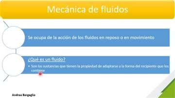
Fluidos: Hidrostática, Hidrodinámica y Propiedades
Diferencias entre líquidos (incompresibles) y gases (compresibles), viscosidad, capilaridad y características de la sangre.
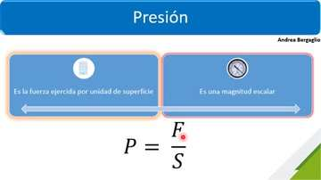
Presión 1: Unidades y Teorema Fundamental de la Hidrostática
Fórmula general de presión (P = F/S), equivalencias (Pa, atm, mmHg, bar) y presión hidrostática (P = δ·g·h).
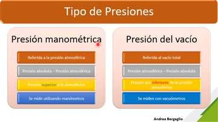
Presión 2: Manométrica, Cuerpo de Pie y Principio de Pascal
Presión absoluta vs. manométrica (esfigmomanómetro), presión en cabeza/corazón/pies y prensa hidráulica de Pascal.
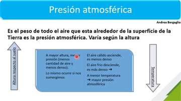
Presión 3: Presión Atmosférica y Principio de Arquímedes
Relación de la presión atmosférica con altura, temperatura y humedad; empuje de Arquímedes y aplicación en hidroterapia.
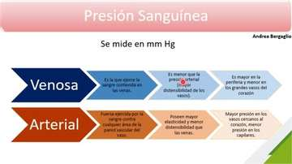
Presión Sanguínea 1: Arterial vs. Venosa y Resistencia Vascular
Comparación entre sistema arterial y venoso, presiones periféricas y centrales, y resistencia vascular al flujo.
— Las arterias poseen gruesas capas de músculo liso y fibras elásticas; soportan altas presiones (máxima en la aorta, decreciendo hacia arteriolas y capilares) y conducen la sangre a favor de un gran gradiente de presión.
— Las venas tienen paredes más delgadas, menos tejido muscular y mayor distensibilidad; trabajan a muy bajas presiones (~15 mmHg en vénulas/venas periféricas cayendo a 4,6 ± 2 mmHg en la vena cava al entrar al corazón) y deben impulsar la sangre de regreso contra la gravedad.
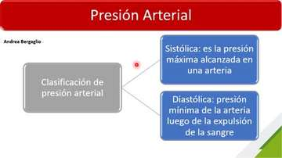
Presión Sanguínea 2: Sistólica/Diastólica y Circuitos Circulatorios
Presión sistólica (120 mmHg) y diastólica (80 mmHg), factores fisiológicos de variación y circuito mayor vs. menor.
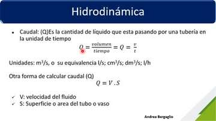
Hidrodinámica 1: Caudal, Ecuación de Continuidad y Bernoulli
Fórmulas de caudal (Q = Vol/t = V·S), conservación de la masa en líquidos incompresibles y teorema de Bernoulli.
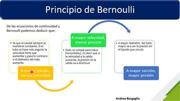
Hidrodinámica 2: Placa de Ateroma, Trombosis y Fluidos Reales
Explicación física del colapso vascular por placa de ateroma (trombosis / ACV) y fluidos newtonianos vs. no newtonianos.
1. En la zona donde se deposita la placa de ateroma se reduce la sección transversal de la luz arterial (↓ S).
2. Para mantener el caudal constante (por Ecuación de Continuidad), la velocidad de la sangre en ese estrechamiento aumenta bruscamente (↑ V).
3. Por el efecto Venturi / deducción de Bernoulli, al aumentar la energía cinética disminuye la presión interna que la sangre ejerce hacia afuera contra la pared del vaso (↓ Pinterna).
4. Como la presión externa de los tejidos vecinos sigue siendo la misma (Pexterna > Pinterna), el vaso sufre una compresión adicional (vasoconstricción mecánica) que termina cerrando la luz vascular y desencadenando una Trombosis o un ACV obstructivo.
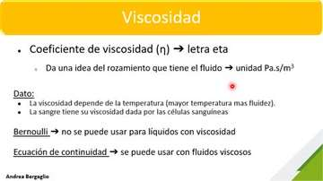
Viscosidad y Número de Reynolds (Laminar vs. Turbulento)
Coeficiente de viscosidad (η), influencia de la temperatura y rangos del Número de Reynolds en la circulación.
— Re < 2000: Flujo Laminar (capas ordenadas, suaves y silenciosas sin mezcla transversal; es el flujo normal en la mayoría de los vasos).
— 2000 < Re < 4000: Flujo Transicional (intermedio entre laminar y turbulento, ej. en la raíz de la aorta al salir la sangre del ventrículo izquierdo).
— Re > 4000: Flujo Turbulento (desordenado, caótico, forma remolinos o vórtices que disipan energía y producen vibraciones audibles como soplos cardíacos; ocurre al abrirse las válvulas cardíacas o detrás de placas de ateroma).
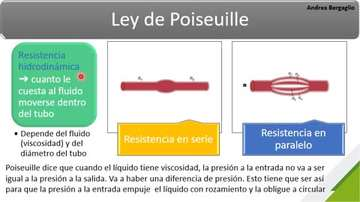
Hidrodinámica Principios 1: Ley de Poiseuille y Paredes Vasculares
Ley de Poiseuille (Q = ΔP / R), analogía con la Ley de Ohm, histología de arterias/venas y respuesta a la vasoconstricción.
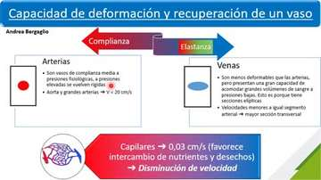
Hidrodinámica Principios 2: Complianza, Elastanza y Volemia
Complianza arterial vs. elastanza venosa, velocidades (aorta 20 cm/s vs. capilar 0,03 cm/s), distribución de los 5 L de sangre y válvulas.
— Complianza: Capacidad de un vaso de distenderse y recuperar su calibre original ante cambios de presión. Las arterias tienen sección circular y complianza media a presiones normales, pero se vuelven rígidas en la hipertensión y el envejecimiento. En la aorta la velocidad media es máxima (20 cm/s).
— Elastanza: Propiedad opuesta presente en las venas, que tienen menor tejido elástico y muscular, presentan sección transversal elíptica y son capaces de alojar grandes volúmenes de sangre a muy bajas presiones funcionando como un reservorio sanguíneo. Además poseen válvulas semilunares que se abren hacia el corazón y se cierran impidiendo el reflujo retrógrado.
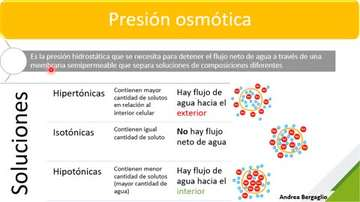
Sistema Linfático, Presión Osmótica y Tonicidad Celular
Soluciones isotónicas, hipertónicas e hipotónicas; drenaje linfático del líquido intersticial y órganos linfoides primarios y secundarios.
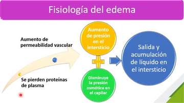
Fisiología del Edema y Fuerzas de Starling
Equilibrio de Starling en la microcirculación capilar (extremo arterial vs. venoso) y las 4 causas fisiopatológicas del edema.
— En el extremo arterial del capilar, la presión hidrostática capilar es muy elevada y vence a la presión oncótica, impulsando agua y solutos pequeños hacia el espacio intersticial (filtración).
— A medida que la sangre avanza hacia el extremo venoso del capilar, la presión hidrostática desciende muchísimo, mientras que las proteínas plasmáticas que no pudieron salir del capilar (fundamentalmente la albúmina) ejercen la presión oncótica (coloidosmótica) que atrae el líquido de vuelta desde el intersticio hacia el interior del vaso (reabsorción). El pequeño remanente lo recogen los capilares linfáticos.
1. Aumento de la Presión Hidrostática Capilar: Por hipertensión arterial, insuficiencia venosa/valvular o insuficiencia cardíaca congestiva.
2. Disminución de la Presión Oncótica Capilar (Hipoproteinemia): Por falta de síntesis o pérdida de albúmina plasmática, como ocurre en la desnutrición crónica infantil (abdomen abultado), la cirrosis hepática o el síndrome nefrótico / insuficiencia renal grave.
3. Aumento de la Permeabilidad Capilar: En procesos inflamatorios (picaduras de insectos, alergias) o quemaduras, los poros del endotelio capilar se agrandan ("como un colador") dejando escapar proteínas al intersticio, las cuales arrastran agua produciendo un edema indurado con calor, rubor y dolor.
4. Obstrucción del Flujo Linfático (Linfedema): Cuando se bloquea el drenaje linfático por extirpación quirúrgica de ganglios (ej. cirugía por cáncer de mama), infecciones o traumatismos.
Práctica Hidrodinámica — Ejercicio 4: Gasto Cardíaco y Áreas
Conversión de gasto cardíaco (5240 ml/min a m³/s) y cálculo del área de las grandes arterias vs. el área total del lecho capilar.
Práctica Hidrodinámica — Ejercicio 6: Velocidad Sanguínea
Cálculo de la velocidad de la sangre en un vaso de 0,5 cm de radio con caudal de 1 L/min (identificando datos accesorios).
Práctica Hidrostática e Hidrodinámica — Ejercicios 7 y 8
Efecto de la contracción muscular lisa sobre la velocidad (Ej. 7) y cálculo de la fuerza del agua sobre el tímpano a 4 m de profundidad (Ej. 8).
Simuladores Interactivos CienciaLab y Calculadoras Paso a Paso
Mové los controles para ver cómo reaccionan los personajes de cada ley física, química y fisiológica en tiempo real.
Ley de Ohm, Efecto Joule y Disyuntor Diferencial (40 mA)
Conducción Continua (10 m/s) vs. Saltatoria en Mielina (100 m/s)
Ósmosis y Tonicidad Celular en Eritrocitos (Isotónica / Crenación / Hemólisis)
Escala de pH/pOH y Regulación Buffer Bicarbonato (Pulmón - Riñón)
Ecuación de Continuidad, Placa de Ateroma, Efecto Venturi y Reynolds
Microcirculación: Equilibrio de las 4 Fuerzas de Starling y Edema
🧮 Calculadora Paso a Paso de Soluciones (% P/V, % P/P y Molaridad)
🌊 Calculadora de Presión Hidrostática y Fuerza (P = δ · g · h)
Prácticas Resueltas con Fracciones Visuales
1) Lámparas Infrarrojas en Consultorio Kinesiológico
"Potencia total = 5120 W alimentadas con 230 V. ¿Cuál es la intensidad de corriente? (4 cifras significativas)"
2) Molaridad de Glucosa 17% m/v (C6H12O6, Mr = 180 g/mol)
"17% m/v = 17 g en 100 ml = 170 g en 1000 ml de solución."
3) Gramos de Glucosa para preparar 689 ml al 15,5% P/V
"15,5% P/V indica 15,5 g de glucosa cada 100 ml de solución."
4) Medicamento 1000 mg (1 g) en 5 ml con δ = 3,46 g/ml a % P/P
"Masa de los 5 ml de solución: msc = 3,46 g/ml × 5 ml = 17,3 g de solución."
5) Amoxicilina Pediátrica: 440 mg (0,44 g) cada 56 ml a % P/V
6) Medicamento 19 mg/ml (Mr = 681 g/mol) a Molaridad
"19 mg/ml = 0,019 g/ml = 19 g en 1000 ml de solución."
Simulador de Autoevaluación para el 2º Parcial
Seleccioná una respuesta en cada punto para ver la corrección inmediata y la explicación de cátedra.
Conceptos Clave Integrados
- ✓ Ley de Ohm (V = I · R) y Calor por Efecto Joule (E = R · I² · t)
- ✓ Conducción saltatoria en mielina (100 m/s) y bomba Na⁺/K⁺
- ✓ Concentraciones (%P/V, %P/P, Molaridad) y Buffer Bicarbonato
- ✓ Continuidad (Q = V · S), Fuerzas de Starling y 4 causas de Edema
Integración Fisiológica
En el cuerpo humano las 3 unidades actúan en simultáneo: los iones disueltos en el plasma (Unidad 7) permiten conducir el potencial de acción neuronal y cardíaco (Unidad 6), mientras el corazón impulsa ese mismo fluido por los vasos cumpliendo las leyes de Continuidad, Poiseuille y Starling (Unidad 8).